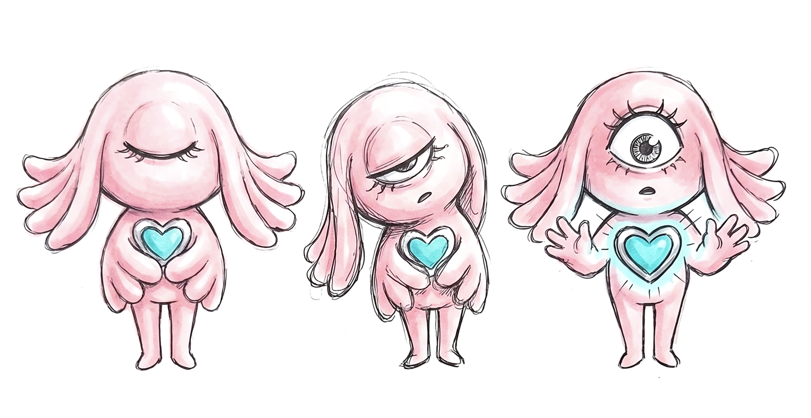
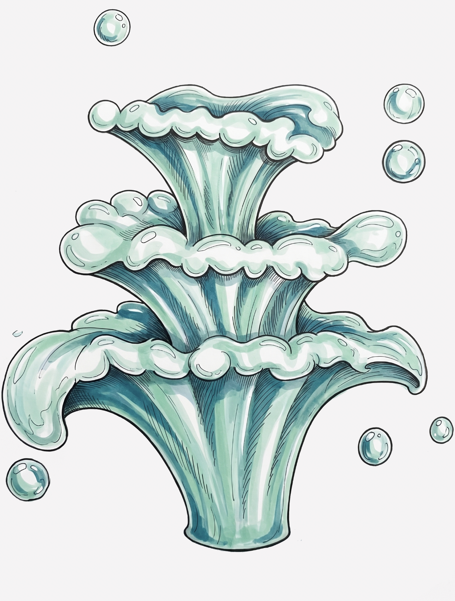
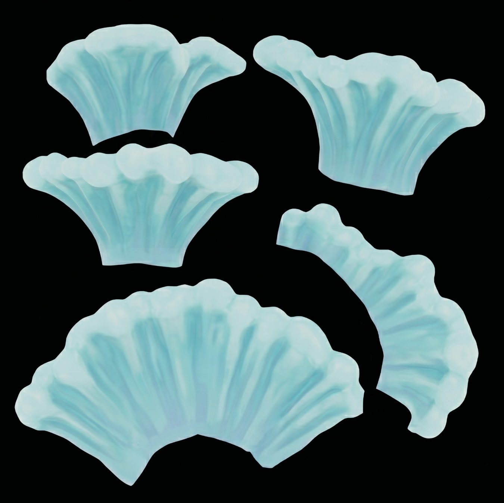
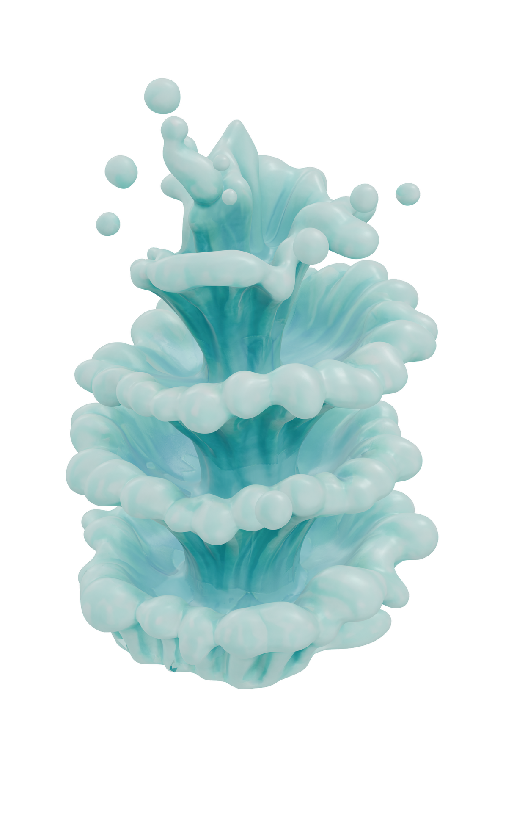
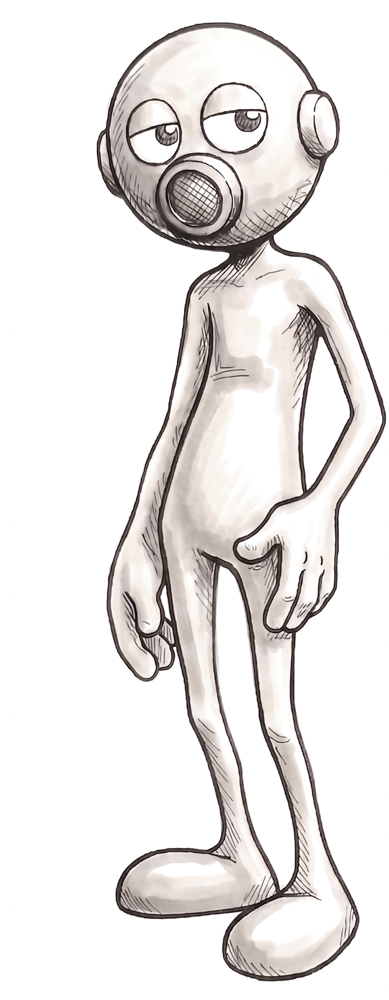
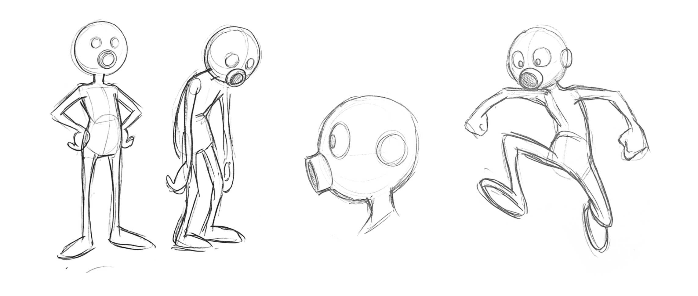
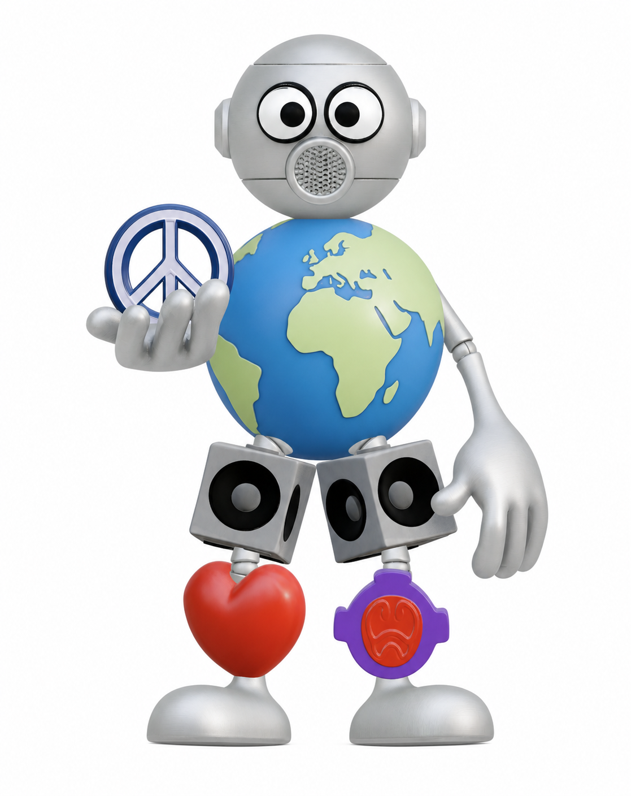
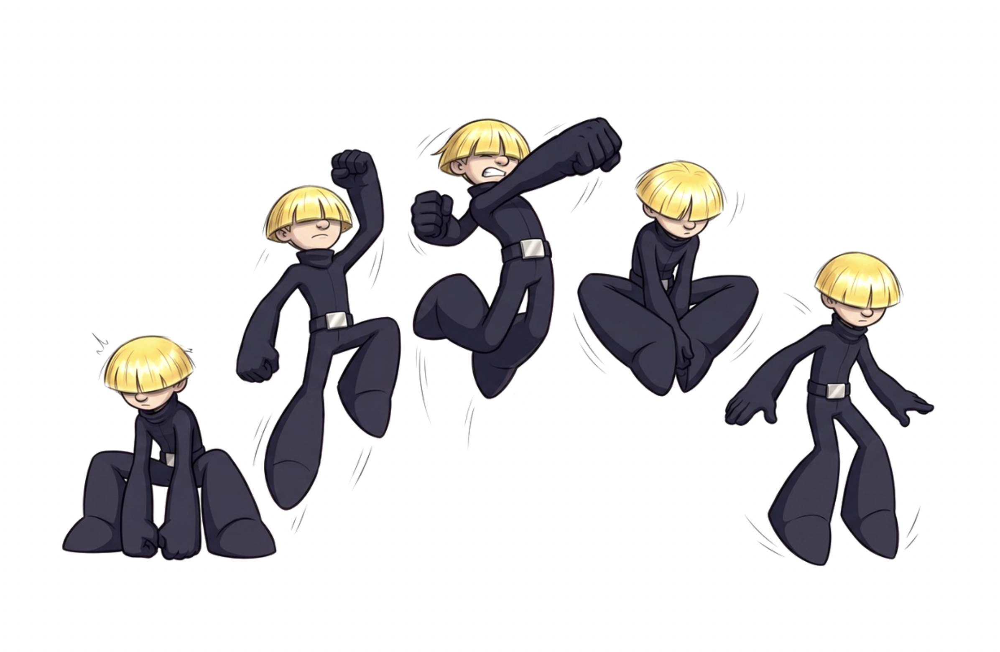
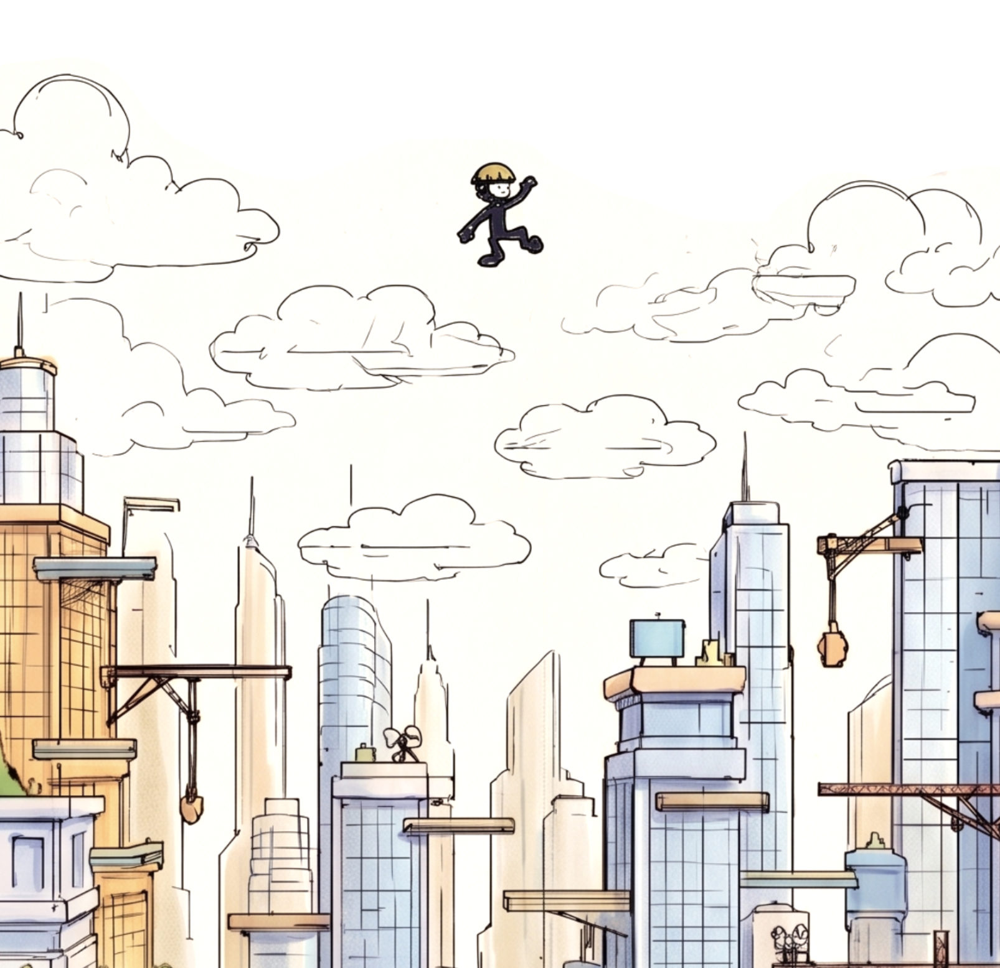

Gamer at heart and 3D Artist with over a decade of experience as a Creative Design Lead in the luxury fashion industry. After an accomplished career designing ready-to-wear, I have transitioned into the gaming space, applying my expertise in garment construction and creative concepts to virtual worlds.
My background includes serving as Creative Lead and Head of Design at PANGAIA, designing runway and commercial collections at JW Anderson, and co-founding the digital fashion brand PERSONA. Backed by formal coursework in Computer Science at Tel Aviv University and Unreal Engine training with Epic Games, I utilize Unreal Engine 5, Blender, Marvelous Designer, and CLO3D. I also integrate multiple AI platforms—composing custom models in ComfyUI for textures, modeling, and motion—to build highly detailed characters, garments, and interactive environments.
3D & Game Development — Unreal Engine 5, Blender, Marvelous Designer, CLO3D
2D & Visualization — Adobe Photoshop, Adobe Illustrator
Motion & Video — After Effects, Adobe Premiere Pro
AI & Workflows — ComfyUI (custom nodes and model composition), generative AI for textures, creative ideation, and rapid prototyping
Creative Lead & Head of Design | PANGAIA | 2020 – Present
Co-Founder | PERSONA
Designer (MRTW & WRTW) | JW Anderson | 2016 – 2020
Design Experience | Raf Simons | 2015
Unreal Engine Course | Epic Games
Computer Science Course | Tel Aviv University
BA in Fashion Design | Shenkar College of Engineering and Design | 2010 – 2014
Art Theory Coursework | Open University of Tel Aviv | 2009